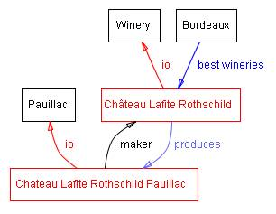
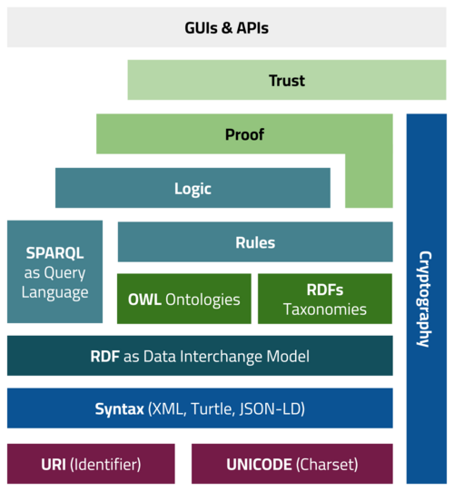

온톨로지의 이해
지식을 구조화하는 기술 — 개념, 관계, 그리고 의미의 체계
이 수업에서 배울 3가지
철학적 기원 이해
온톨로지 구조 파악
활용 사례 탐구
온톨로지란 무엇인가?
🏛️ 철학에서의 온톨로지
존재론(存在論) — "존재하는 것은 무엇인가?"를 탐구하는 철학의 한 분야
- 아리스토텔레스의 범주론에서 시작
- 존재의 본질과 구조를 분류
- 세계를 이해하는 개념적 틀 제공
💻 정보과학에서의 온톨로지
"공유된 개념화의 형식적이고 명시적인 명세" — Tom Gruber (1993)
- 특정 분야의 지식을 체계적으로 표현
- 개념, 속성, 관계를 정의
- 컴퓨터가 이해할 수 있는 형식
온톨로지의 4가지 핵심 구성요소
클래스 (Class)
같은 특성을 가진 개체들의 집합. 예: "동물", "포유류", "개"
관계 (Relation)
클래스 간의 연결. 예: "개 → 하위분류 → 포유류"
속성 (Property)
클래스의 특징을 기술. 예: "이름", "나이", "서식지"
인스턴스 (Instance)
클래스에 속하는 구체적 개체. 예: "내 반려견 초코"
온톨로지의 계층 구조

온톨로지의 클래스-서브클래스 계층 구조 (출처: Stanford/Noy & McGuinness)
상위 클래스(Thing) → 하위 클래스(생물/무생물) → 더 구체적 클래스(동물/식물) → 인스턴스(초코)로 내려갑니다. 이것이 is-a 관계입니다.
왜 온톨로지가 필요한가?
지식 공유
같은 용어를 다르게 이해하는 문제 해결. 공통 어휘와 의미 합의.
시맨틱 검색
"사과" 검색 시 과일인지, 회사인지, 사과(謝過)인지 구분 가능.
AI 추론
기계가 맥락을 이해하고 새로운 지식을 추론할 수 있게 함.
온톨로지는 "사람과 컴퓨터가 같은 언어로 지식을 이해하는 약속"입니다.
온톨로지의 표현 방법: RDF
RDF(Resource Description Framework)는 온톨로지를 표현하는 기본 단위입니다.
<세종대왕> <발명> <한글> .
<세종대왕> <유형> <왕> .
<한글> <유형> <문자체계> .
시맨틱 웹과 온톨로지
웹의 진화
- Web 1.0 — 읽기 전용 (HTML 문서)
- Web 2.0 — 읽기+쓰기 (SNS, 블로그)
- Web 3.0 — 의미 이해 (시맨틱 웹)
팀 버너스-리(Tim Berners-Lee)가 제안한 차세대 웹
시맨틱 웹 기술 스택

Semantic Web Layer Cake (CC BY-SA 4.0, Wikimedia Commons)
온톨로지 vs 데이터베이스 vs 지식그래프
| 항목 | 데이터베이스 | 온톨로지 | 지식그래프 |
|---|---|---|---|
| 목적 | 데이터 저장/조회 | 지식의 의미 정의 | 관계 기반 지식 탐색 |
| 구조 | 테이블 (행·열) | 클래스·속성·관계 | 노드·엣지 그래프 |
| 유연성 | 스키마 고정 | 확장 가능 | 매우 유연 |
| 추론 | 불가 | 논리적 추론 가능 | 부분적 추론 |
| 예시 | MySQL, PostgreSQL | OWL, Protégé | Google KG, Wikidata |
온톨로지는 지식그래프의 "설계도"이고, 지식그래프는 온톨로지에 따라 구축된 "실제 데이터"입니다.
온톨로지는 어떻게 만드는가?
- 1도메인 범위 결정어떤 분야의 지식을 표현할 것인가? (예: 의료, 교육, 음식)
- 2핵심 개념(클래스) 나열해당 분야의 주요 개념들을 브레인스토밍으로 수집
- 3계층 구조 설계상위/하위 관계(is-a)로 클래스를 조직화
- 4속성과 관계 정의각 클래스의 속성(has-a)과 클래스 간 관계를 명세
- 5인스턴스 생성 및 검증실제 데이터를 입력하고 추론 엔진으로 일관성 확인
OWL — 온톨로지를 작성하는 언어
OWL이란?
- W3C 표준 온톨로지 언어
- RDF 위에 구축된 표현력 높은 언어
- 논리적 추론을 지원
도구: Protégé
스탠포드 대학이 개발한 무료 온톨로지 편집기. GUI로 클래스, 속성, 관계를 시각적으로 설계할 수 있음.
protege.stanford.edu
온톨로지가 사용되는 곳
의료
SNOMED CT — 30만 개 의학 개념의 표준 용어 체계
생명과학
Gene Ontology — 유전자 기능을 분류하는 세계 표준
웹 검색
Schema.org — 구글·빙이 사용하는 웹 콘텐츠 의미 표현
도서관
더블린 코어 — 전 세계 디지털 자원의 메타데이터 표준
제조업
제품 온톨로지 — 부품·공정·품질 지식의 체계화
인공지능
AI 에이전트의 세계 모델 — 상식과 맥락 이해의 기반
세상을 구조화한 유명 온톨로지들
DBpedia
위키피디아의 구조화된 버전. 수백만 개의 엔티티와 관계를 RDF로 제공.
4.5M+ 엔티티FOAF
Friend of a Friend — 사람과 사회적 관계를 표현하는 온톨로지.
소셜 네트워크Wikidata
위키미디어 재단의 개방형 지식 베이스. 100M+ 항목.
다국어 지원Gene Ontology
생물학 유전자 기능의 표준 분류. 전 세계 연구자가 공동 관리.
44K+ 용어온톨로지의 미래
LLM + 온톨로지
대규모 언어 모델에 구조화된 지식을 결합하여 정확성 향상
디지털 트윈
도시·건물·공장의 디지털 복제에 온톨로지로 의미 부여
분산 지식
블록체인 + 온톨로지로 탈중앙화된 지식 공유 네트워크
지식의 구조를 설계하라
온톨로지는 단순한 기술이 아닌,
세상을 이해하고 소통하는 새로운 방법입니다.
참고: Gruber (1993), W3C OWL Spec, Stanford Protégé